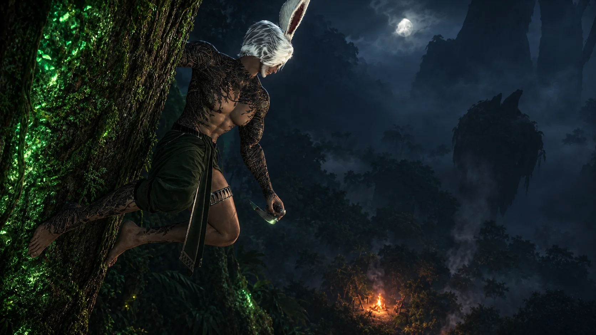
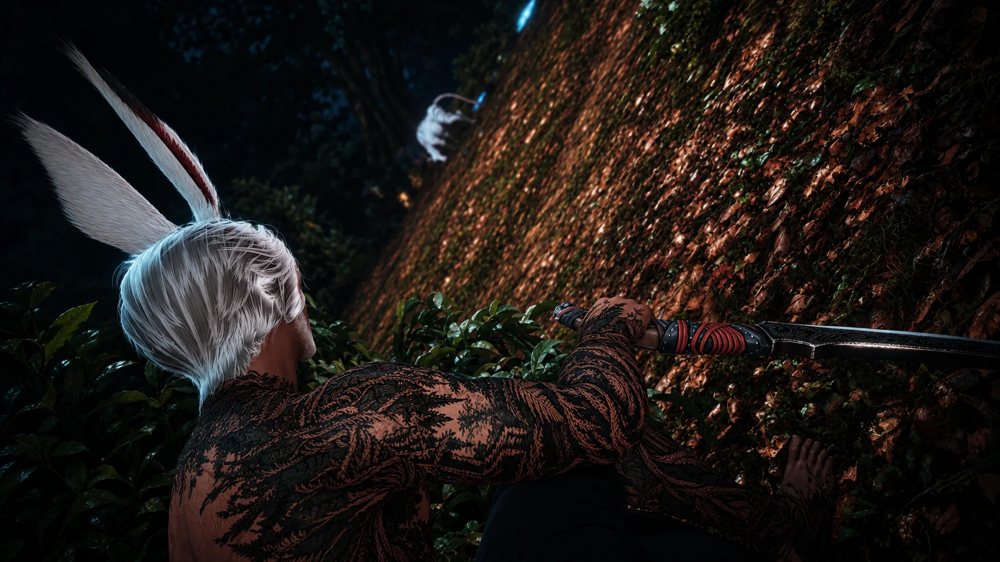
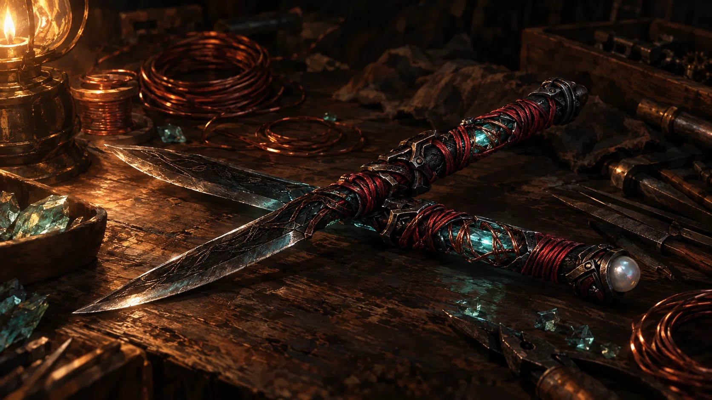

A Garlean/Viera hybrid. Taller, larger and broader than the common Viera, and he grows facial hair.
The Story
Born of the wood and the iron
The full tale of Wyse, from a patrol at the jungle's edge to the wanderer he is today.

The Patrol
Nearly two hundred years ago, long before any empire bore its name, the Garleans were a small and bitter people. Other nations had driven them into the frozen north of Ilsabard for a single reason: they could not wield magic. They endured by learning to build what they could not cast.
Ahmetra was a huntress of the Rava, the Viera of the Golmore Jungle. Like all Rava, she lived by the Green Word, the old law that forbade contact with the outside world except to protect the wood. She walked the jungle's edge, where outsiders sometimes strayed, and her duty was to send them back the way they came.
One season her patrol found a camp of strangers at the forest's border: a Garlean expedition from that struggling northern republic, ranging far south in search of metal, land, and the secrets of peoples who could do what they could not. Ahmetra went alone to drive them off. One of them caught her.
She never learned his name. She remembered only his voice, the smell of oil and iron on his tools, and the pale pearl set in the middle of his forehead.
She returned to the wood and told no one. Months later, she bore a son.

The Child Who Grew Too Fast
She named him Wyse. From his first year, it was clear he was not like the others.
Viera children grow slowly, as befits a people who live for centuries. Wyse did not. His father's blood drove him to grow at the pace of a human child. By ten summers he stood as tall as Viera three times his age. By eighteen he was a grown man, while the children born in the same season as him were still children. The elders noticed. So did everyone else.
And there was the mark: a small, smooth swelling of pearl at the center of his brow. It was a faint, half-formed third eye, the sign of the Garlean blood. Ahmetra bound it beneath wrapped cloth from the day he was born and told him never to let anyone see it. Wyse learned young that it was the one part of himself he could never explain away.
The Hollow
Every Viera child learns to listen to the wood and to call upon the aether within themselves: to warm cold hands, to close a shallow cut, to steady an arrow in flight. These are small things, as natural to the Viera as breathing.
Wyse could do none of them. When he reached inward, there was nothing there to reach. Like his father's people, he could not produce or shape aether of his own.
The other children gave him a name for it: the Hollow. Some of the elders said worse.
A Viera who cannot touch the wood, they murmured, is no Viera at all.
The Spring
When Wyse was fourteen, an older Viera tore the cloth from his brow in front of the others. For the first time, someone spoke the word aloud: Garlean.
That night he went alone into the deep jungle, to a grove where an old aetherial spring rose from the stone. He drew his hunting knife and cut the mark from his own forehead.
It went badly. The pearl was rooted deeper than he had imagined, and the blood would not stop. He fell into the moss beside the spring, certain he would die there, and almost glad of it.
Then he felt something he had never felt in his life. The aether of the spring, of the roots and the moss and the night air itself, came rushing into him like water into a dry riverbed. It poured into the wound. Flesh knit to flesh. Bone smoothed beneath it. The emptiness he had carried since birth was, for one moment, full.
He woke at dawn with his brow whole and unmarked. There was no scar and no sign that the third eye had ever been there. The only proof was the blood drying on the stones and a small, pale pearl lying in the moss beside his hand.
He kept it. He has never told anyone why.
The Gift and the Curse
Over the years that followed, Wyse slowly came to understand what had happened at the spring.
He could not make aether, but he could take it. He could draw it in from the living world around him: from water, from trees, from storms, from the ground beneath his feet. In places rich with aether he could heal wounds, move faster than he had any right to, and strike with real force.
But the gift had a cruel edge. Whatever he absorbed would not stay. If he did not spend it quickly, it bled out of him like heat from an open hand, and he was hollow again. In places where the land's aether ran thin, he was little more than an ordinary man.
He needed a way to keep it.

The First Blades
Here his father's blood showed itself once more, and in a way Wyse would spend decades resenting. He had a gift for making things. He had the patience for mechanisms, an uncanny sense of how pieces fit together, and steady hands with metal and wire.
For nearly ten years he worked in secret. He built a pair of blades, and into each hilt he set a crystal core wrapped in hand-wound wire, designed to hold the aether he absorbed so it could not slip away. When he needed it, he could draw it back out to strengthen a strike, mend his body, or simply survive another day.
The first versions were crude. One core cracked and burned his palm so badly that the scar remains to this day. But each attempt was better than the last, until the blades held true.
Into the pommel of one, he set the pearl from the spring. He turned the last piece of his father into something that served him.
To Wyse, the blades are more than weapons. They are the only certainty he has that he will never be empty again.
Leaving the Wood
When Wyse came of age, the Green Word had already decided much of his path. Rava men may not live within the villages. They become Wood-Warders, solitary guardians who protect the forest from its edges.
Wyse might have accepted that life. But in time his workshop was discovered: wire, crystal, and machinery that looked far too much like the work of outsiders. And with it, Ahmetra's long-kept secret finally came to light. No mark remained for anyone to point to, but the whispers were enough.
Ahmetra was shamed before the village. Wyse was not offered the Warder's oath. He was simply told to go.
He left before they could make it formal, hoping that his absence would spare his mother from paying any more for what had been done to her.
As exiles do, he gave up his forest name at the jungle's edge. He kept only the one his mother had given him: Wyse.